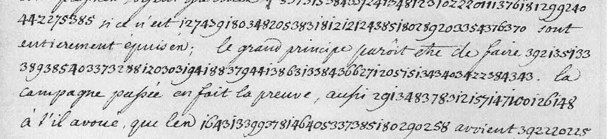

At a glanceCiphertext-only break · 532 of 553 groups
- The letters
- Gottfried van Swieten, the Empress’s diplomat at the Elector of Cologne’s court in Bonn, to Count Cobenzl, minister plenipotentiary at Brussels, 14 January and 4 February 1759.
- Where
- Archives générales du Royaume, Brussels, Secrétairerie d’État et de Guerre inv. 1236, ff. 327–328 and 344–345; DECODE R957 and R956, listed as not decrypted.
- The cipher
- Three-digit numbers 100–442 for letters, syllables and a few words, in alphabetical order with occasional second numbers; unseparated runs inside clear French.
- How it was decrypted
- An annealer that keeps the table in alphabetical order, scored by a French language model, broke it on one start in eight; the rest was corrected against the clear text around each run.
- What it says
- The convention that left Prussian Gueldre’s revenues to the French, Moers handed to a prince without asking the Empress, and Soubise’s army living on contributions with only Broglie competent among its generals.
- Still open
- About 21 groups, nearly all proper names.
This page was split on 14 October 2026 from the joint page for van Swieten’s three letters. The undated letter of 1757–58 uses an earlier table, and its decipherment is written under it, a different cipher with its own page: Van Swieten to Cobenzl, 1757–58.
01 The two letters
| Record | Folio, date | Cipher | Decrypted |
|---|---|---|---|
| R957 | ff. 327–328, Bonn, 14 January 1759 | 210 groups in two unbroken runs | all but four groups |
| R956 | ff. 344–345, Bonn, 4 February 1759 | 343 groups in nineteen runs set inside clear sentences | all but about 16 groups |
In 1759 the digits run on with no separators. They divide into threes, which the lengths of the runs confirm. Four DECODE transcriptions had dropped or doubled digits; those runs were transcribed again from the scans.
02 Rebuilding the 1759 table
The 1759 numbers do not fit the 1757 values of the earlier letter, but if the new table was built the same way, it has a strong constraint: a higher number never stands for an alphabetically earlier syllable. The solver (msolve.py) keeps one inventory index per observed number, sorted, and allows at most two numbers per syllable. It anneals the boundaries against a French character model (fr-1750-nospace, added to the shared lang/ registry), with a small bonus per decoded letter. As a control, a 274-group French passage encoded with a random alphabetical table was recovered verbatim. On the real 491 clean groups, one start in eight gave “la nouvelle convention on laisse le revenu… en réservant la souveraineté… l’impératrice”, and the other seven did not.
The key was then corrected by hand, run by run, against the French sentence each run sits in. For example, “avant que les campagnes soient garnies, on ne songe pas à faire des magazins, si ce n’est aux dépens des États de l’Empire qui sont entièrement épuisés”. The end of the table falls into place: x 438/439, y 441, z 442. So do word entries filed in their alphabetical slot: nous, pour, qui, roi, comte.

03 Bonn, 14 January 1759
… de l’administration; la nouvelle convention laisse les revenus à la [G…] en réservant la souveraineté à l’Impératrice. On promet de toujours [?] de la part des François. Dans cette supposition, sans que nous ayons aucun ordre de la cour à ce sujet, et cela cause beaucoup de mésintelligences. On vient de la part de la [G…] de mettre en possession de la principauté de Meurs le prince de Con[…] […] qui vous formez des prétensions sans prévenir seulement l’Impératrice, qui en est souveraine.
The Prussian lands on the Lower Rhine (Gueldre, Moers) were in French and Austrian hands from 1757. The passage records a convention that left their revenues to one party and the sovereignty to Maria Theresa. It also reports a grant of Moers made without informing her.
04 Bonn, 4 February 1759
Il est constant que l’armée du Prince de Soubise est dans le meilleur état qu’on puisse imaginer … avant que les campagnes soient garnies, on ne songe pas à faire des magazins si ce n’est aux dépens des États de l’Empire qui sont entièrement épuisés; le grand principe paraît être de faire subsister l’armée du roi y sans qu’il en coûte un sou. La campagne passée en fait la preuve, aussi le prince [name] a-t-il avoué que les contributions de la Gueldre avoient suffi à l’entretien de son armée, et qu’on avoit même transmis assez d’argent à l’armée de Contades pour subvenir aux frais du traitement des troupes pendant l’hiver, et que toutes les opérations de l’année passée n’avoient eu d’autre but. Le prince pense bien, mais le reste est malintentionné; outre cela il n’y a pas un officier général entendu à cette armée, excepté le duc de Broglio; le m[aréchal] général des logis de Vaut est intéressé et ignorant, et non l’intendant nécessaire pour mettre en œuvre le système que j’ai détaillé ci-dessus … D’ailleurs, homme non violent, je n’ai pas besoin de parler de Dumesnil; il est universellement connu pour être prussien, […] le prince Camille … Parmi les maréchaux de ce[…] il n’y a que [name] qu’on estime. Comme de notre côté nous ne pouvons pas résister aux plaintes fondées des États, et que les ordres de la cour nous obligent de faire des représentations … on a pris occasion de former des plaintes contre le comte de Pergen comme s’il n’agissoit pas conformément aux intérêts de la cause commune.
05 What remains uncertain
- 232 (twice, R957): a name filed under G, the body that receives the revenues and acts on Moers. Not decrypted (I).
- 147 100 126 148 (R956): the prince who “avowed”. From the context it should be Soubise, but the numbers are out of alphabetical order, so this is probably a name group. Not decrypted (I).
- 170 323 441 (R957) and 170 271 289 337 (R956): the syllables decrypt (con…, …il l’on) but the words do not resolve. Conjectural (M).
- 290 313 316 313 373 (R956): the one marshal “qu’on estime”. The syllables decrypt to la-n-ne-n-r and the name is not identified; the digit division here is uncertain in the scan. Not decrypted (I).
- “on promet de toujours” and “supposition [pr] sans que” (R957) are awkward French (C).
- 300 and 294 238 (R956): “le m[aréchal] général des logis de Vaut”. Each number occurs only once, and its value comes from its place in the alphabetical table (I). 300 lies between 299 ma and 303 me, so it is mar… or a word entry such as maréchal rather than m. 294 comes after 293 li and can be lo; 238 comes before 239 g and can be a second g; with 281 is they give logis. The earlier reading here, “le major général des Liégeois”, needed 238 = ge, a ge placed before g (239) and ga (240), and its letters do not spell Liégeois. The maréchal général des logis ran the marches and quarters of a French army. The officer is probably François-Eugène de Vault (1717–1790): a memorandum by “M. de Vault” on the armies in Germany, August 1758, is filed with Soubise’s campaign papers. His post in 1759 has not been verified (I).
06 Sources
- Archives générales du Royaume, Brussels, Secrétairerie d’État et de Guerre, inv. 1236; images and transcriptions on DECODE, records R956 and R957 (transcribers SofPe 2019, XL 2020).
- No printed edition or earlier decipherment of these letters was found.
- Service historique de la Défense, Vincennes, file “Juillet 1757–novembre 1758 : instruction du roi au prince de Soubise pour la direction de la campagne…” (catalogue description), which lists a “mémoire de M. de Vault sur la situation des armées en Allemagne en août 1758”.
Transcriptions, solver, key and readings: targets/swieten1759/ in the repository.